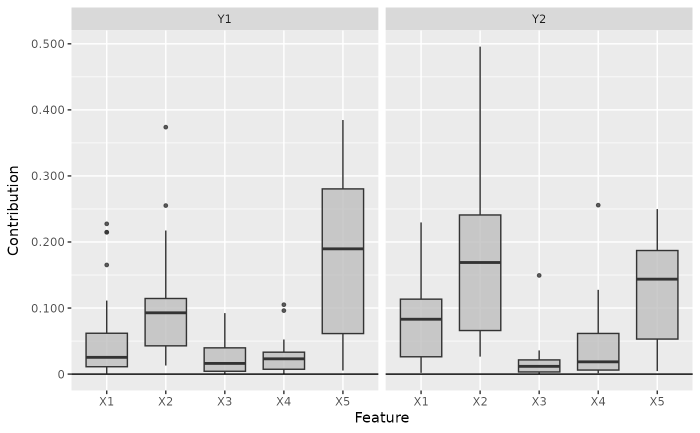
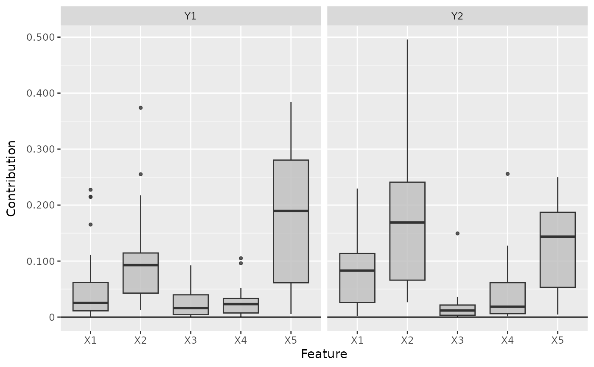
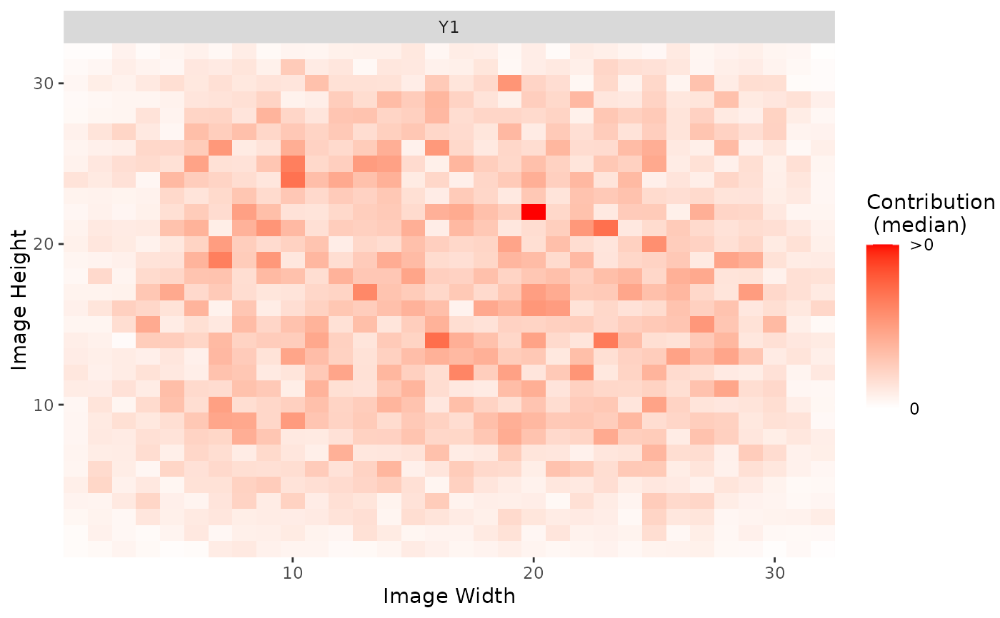
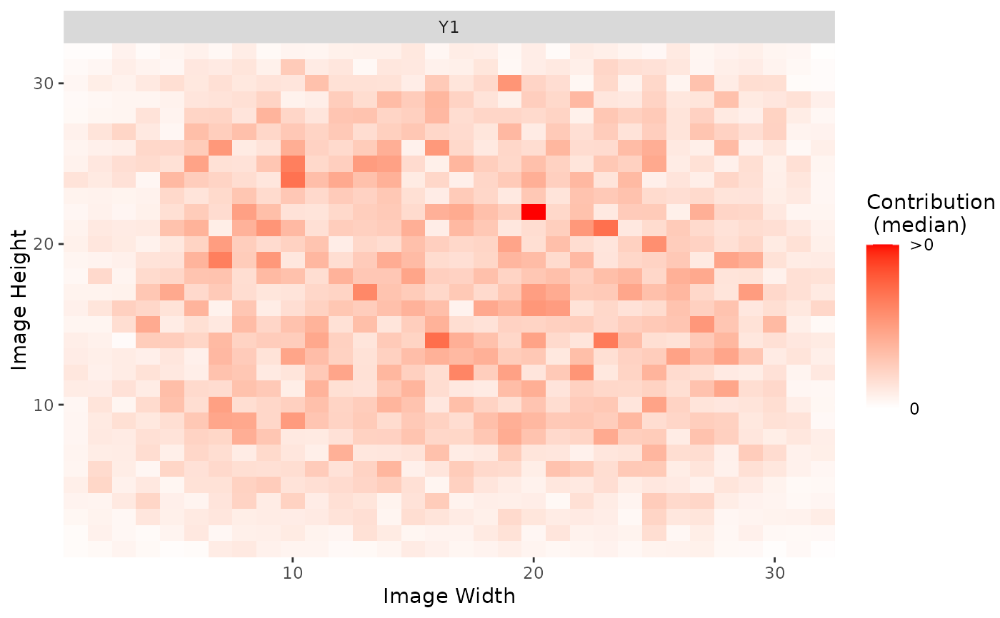

This is an implementation of the Deep Learning Important FeaTures
(DeepLift) algorithm introduced by Shrikumar et al. (2017). It's a local
method for interpreting a single element \(x\) of the dataset concerning
a reference value \(x'\) and returns the contribution of each input
feature from the difference of the output (\(y=f(x)\)) and reference
output (\(y'=f(x')\)) prediction. The basic idea of this method is to
decompose the difference-from-reference prediction with respect to the
input features, i.e.
$$\Delta y = y - y' = \sum_i C(x_i).$$
Compared to Layer-wise Relevance Propagation (see LRP), the
DeepLift method is an exact decomposition and not an approximation, so we
get real contributions of the input features to the
difference-from-reference prediction. There are two ways to handle
activation functions: Rescale-Rule ('rescale') and
RevealCancel-Rule ('reveal_cancel').
References
A. Shrikumar et al. (2017) Learning important features through propagating activation differences. ICML 2017, p. 4844-4866
Super class
innsight::InterpretingMethod -> DeepLift
Public fields
x_refThe reference input of size (1, dim_in) for the interpretation.
rule_nameName of the applied rule to calculate the contributions for the non-linear part of a neural network layer. Either
"rescale"or"reveal_cancel".
Methods
Inherited methods
Method new()
Create a new instance of the DeepLift method.
Usage
DeepLift$new(
converter,
data,
channels_first = TRUE,
output_idx = NULL,
ignore_last_act = TRUE,
rule_name = "rescale",
x_ref = NULL,
dtype = "float"
)Arguments
converterAn instance of the R6 class
Converter.dataThe data for which the contribution scores are to be calculated. It has to be an array or array-like format of size (batch_size, dim_in).
channels_firstThe format of the given date, i.e. channels on last dimension (
FALSE) or after the batch dimension (TRUE). If the data has no channels, use the default valueTRUE.output_idxThis vector determines for which outputs the method will be applied. By default (
NULL), all outputs (but limited to the first 10) are considered.ignore_last_actSet this boolean value to include the last activation, or not (default:
TRUE). In some cases, the last activation leads to a saturation problem.rule_nameName of the applied rule to calculate the contributions. Use one of
'rescale'and'reveal_cancel'.x_refThe reference input of size (1, dim_in) for the interpretation. With the default value
NULLyou use an input of zeros.dtypeThe data type for the calculations. Use either
'float'for torch::torch_float or'double'for torch::torch_double.
Method plot()
This method visualizes the result of the selected method in a
ggplot2::ggplot. You can use the argument data_idx to select
the data points in the given data for the plot. In addition, the
individual output nodes for the plot can be selected with the argument
output_idx. The different results for the selected data points and
outputs are visualized using the method ggplot2::facet_grid.
You can also use the as_plotly argument to generate an interactive
plot based on the plot function plotly::plot_ly.
Arguments
data_idxAn integer vector containing the numbers of the data points whose result is to be plotted, e.g.
c(1,3)for the first and third data point in the given data. Default:c(1).output_idxAn integer vector containing the numbers of the output indices whose result is to be plotted, e.g.
c(1,4)for the first and fourth model output. But this vector must be included in the vectoroutput_idxfrom the initialization, otherwise, no results were calculated for this output node and can not be plotted. By default (NULL), the smallest index of all calculated output nodes is used.aggr_channelsPass one of
'norm','sum','mean'or a custom function to aggregate the channels, e.g. the maximum (base::max) or minimum (base::min) over the channels or only individual channels withfunction(x) x[1]. By default ('sum'), the sum of all channels is used.
Note: This argument is used only for 2D and 3D inputs.as_plotlyThis boolean value (default:
FALSE) can be used to create an interactive plot based on the libraryplotly. This function takes use of plotly::ggplotly, hence make sure that the suggested packageplotlyis installed in your R session.
Advanced: You can first output the results as a ggplot (as_plotly = FALSE) and then make custom changes to the plot, e.g. other theme or other fill color. Then you can manually call the functionggplotlyto get an interactive plotly plot.
Returns
Returns either a ggplot2::ggplot (as_plotly = FALSE) or a
plotly::plot_ly (as_plotly = TRUE) with the plotted results.
Method boxplot()
This function visualizes the results of this method in a boxplot, where
the type of visualization depends on the input dimension of the data.
By default a ggplot2::ggplot is returned, but with the argument
as_plotly an interactive plotly::plot_ly plot can be created,
which however requires a successful installation of the package
plotly.
Usage
DeepLift$boxplot(
output_idx = NULL,
data_idx = "all",
ref_data_idx = NULL,
aggr_channels = "norm",
preprocess_FUN = abs,
as_plotly = FALSE,
individual_data_idx = NULL,
individual_max = 20
)Arguments
output_idxAn integer vector containing the numbers of the output indices whose result is to be plotted, e.g.
c(1,4)for the first and fourth model output. But this vector must be included in the vectoroutput_idxfrom the initialization, otherwise, no results were calculated for this output node and can not be plotted. By default (NULL), the smallest index of all calculated output nodes is used.data_idxBy default ("all"), all available data is used to calculate the boxplot information. However, this parameter can be used to select a subset of them by passing the indices. E.g. with
data_idx = c(1:10, 25, 26)only the first10data points and the 25th and 26th are used to calculate the boxplots.ref_data_idxThis integer number determines the index for the reference data point. In addition to the boxplots, it is displayed in red color and is used to compare an individual result with the summary statistics provided by the boxplot. With the default value (
NULL) no individual data point is plotted. This index can be chosen with respect to all available data, even if only a subset is selected with argumentdata_idx.
Note: Because of the complexity of 3D inputs, this argument is used only for 1D and 2D inputs and disregarded for 3D inputs.aggr_channelsPass one of
'norm','sum','mean'or a custom function to aggregate the channels, e.g. the maximum (base::max) or minimum (base::min) over the channels or only individual channels withfunction(x) x[1]. By default ('norm'), the Euclidean norm of all channels is used.
Note: This argument is used only for 2D and 3D inputs.preprocess_FUNThis function is applied to the method's result before calculating the boxplots. Since positive and negative values often cancel each other out, the absolute value (
abs) is used by default. But you can also use the raw data (identity) to see the results' orientation, the squared data (function(x) x^2) to weight the outliers higher or any other function.as_plotlyThis boolean value (default:
FALSE) can be used to create an interactive plot based on the libraryplotlyinstead ofggplot2. Make sure that the suggested packageplotlyis installed in your R session.individual_data_idxOnly relevant for a
plotlyplot with input dimension1or2! This integer vector of data indices determines the available data points in a dropdown menu, which are drawn in individually analogous toref_data_idxonly for more data points. With the default valueNULLthe firstindividual_maxdata points are used.
Note: Ifref_data_idxis specified, this data point will be added to those fromindividual_data_idxin the dropdown menu.individual_maxOnly relevant for a
plotlyplot with input dimension1or2! This integer determines the maximum number of individual data points in the dropdown menu without countingref_data_idx. This means that ifindividual_data_idxhas more thanindividual_maxindices, only the firstindividual_maxwill be used. A too high number can significantly increase the runtime.
Returns
Returns either a ggplot2::ggplot (as_plotly = FALSE) or a
plotly::plot_ly (as_plotly = TRUE) with the boxplots.
Examples
#----------------------- Example 1: Torch ----------------------------------
library(torch)
# Create nn_sequential model and data
model <- nn_sequential(
nn_linear(5, 12),
nn_relu(),
nn_linear(12, 2),
nn_softmax(dim = 2)
)
data <- torch_randn(25, 5)
ref <- torch_randn(1, 5)
# Create Converter
converter <- Converter$new(model, input_dim = c(5))
# Apply method DeepLift
deeplift <- DeepLift$new(converter, data, x_ref = ref)
#> Backward pass 'DeepLift':
#>
|
| | 0%
|
|=================================== | 50%
|
|======================================================================| 100%
# Print the result as a torch tensor for first two data points
deeplift$get_result("torch.tensor")[1:2]
#> torch_tensor
#> (1,.,.) =
#> 0.01 *
#> -0.4899 -1.5770
#> 1.9295 -1.7329
#> -12.7112 -28.7971
#> -9.7019 2.4901
#> -5.1803 2.8987
#>
#> (2,.,.) =
#> 0.01 *
#> -5.2538 -16.0967
#> -0.4755 0.3259
#> -15.9571 -45.6876
#> -5.5035 2.9170
#> -18.1084 7.3541
#> [ CPUFloatType{2,5,2} ]
# Plot the result for both classes
plot(deeplift, output_idx = 1:2)
 # Plot the boxplot of all datapoints
boxplot(deeplift, output_idx = 1:2)

# ------------------------- Example 2: Neuralnet ---------------------------
library(neuralnet)
data(iris)
# Train a neural network
nn <- neuralnet((Species == "setosa") ~ Petal.Length + Petal.Width,
iris,
linear.output = FALSE,
hidden = c(3, 2), act.fct = "tanh", rep = 1
)
# Convert the model
converter <- Converter$new(nn)
# Apply DeepLift with rescale-rule and a reference input of the feature
# means
x_ref <- matrix(colMeans(iris[, c(3, 4)]), nrow = 1)
deeplift_rescale <- DeepLift$new(converter, iris[, c(3, 4)], x_ref = x_ref)
#> Backward pass 'DeepLift':
#>
|
| | 0%
|
|======================= | 33%
|
|=============================================== | 67%
|
|======================================================================| 100%
# Get the result as a dataframe and show first 5 rows
deeplift_rescale$get_result(type = "data.frame")[1:5, ]
#> data feature class value
#> 1 data_1 Petal.Length Species == "setosa" 1.0018877
#> 2 data_2 Petal.Length Species == "setosa" 1.0018877
#> 3 data_3 Petal.Length Species == "setosa" 1.0357255
#> 4 data_4 Petal.Length Species == "setosa" 0.9662209
#> 5 data_5 Petal.Length Species == "setosa" 1.0018877
# Plot the result for the first datapoint in the data
plot(deeplift_rescale, data_idx = 1)
# Plot the boxplot of all datapoints
boxplot(deeplift, output_idx = 1:2)

# ------------------------- Example 2: Neuralnet ---------------------------
library(neuralnet)
data(iris)
# Train a neural network
nn <- neuralnet((Species == "setosa") ~ Petal.Length + Petal.Width,
iris,
linear.output = FALSE,
hidden = c(3, 2), act.fct = "tanh", rep = 1
)
# Convert the model
converter <- Converter$new(nn)
# Apply DeepLift with rescale-rule and a reference input of the feature
# means
x_ref <- matrix(colMeans(iris[, c(3, 4)]), nrow = 1)
deeplift_rescale <- DeepLift$new(converter, iris[, c(3, 4)], x_ref = x_ref)
#> Backward pass 'DeepLift':
#>
|
| | 0%
|
|======================= | 33%
|
|=============================================== | 67%
|
|======================================================================| 100%
# Get the result as a dataframe and show first 5 rows
deeplift_rescale$get_result(type = "data.frame")[1:5, ]
#> data feature class value
#> 1 data_1 Petal.Length Species == "setosa" 1.0018877
#> 2 data_2 Petal.Length Species == "setosa" 1.0018877
#> 3 data_3 Petal.Length Species == "setosa" 1.0357255
#> 4 data_4 Petal.Length Species == "setosa" 0.9662209
#> 5 data_5 Petal.Length Species == "setosa" 1.0018877
# Plot the result for the first datapoint in the data
plot(deeplift_rescale, data_idx = 1)
 # Plot the result as boxplots
boxplot(deeplift_rescale)

# ------------------------- Example 3: Keras -------------------------------
library(keras)
if (is_keras_available()) {
data <- array(rnorm(10 * 32 * 32 * 3), dim = c(10, 32, 32, 3))
model <- keras_model_sequential()
model %>%
layer_conv_2d(
input_shape = c(32, 32, 3), kernel_size = 8, filters = 8,
activation = "softplus", padding = "valid"
) %>%
layer_conv_2d(
kernel_size = 8, filters = 4, activation = "tanh",
padding = "same"
) %>%
layer_conv_2d(
kernel_size = 4, filters = 2, activation = "relu",
padding = "valid"
) %>%
layer_flatten() %>%
layer_dense(units = 64, activation = "relu") %>%
layer_dense(units = 16, activation = "relu") %>%
layer_dense(units = 2, activation = "softmax")
# Convert the model
converter <- Converter$new(model)
# Apply the DeepLift method with reveal-cancel rule
deeplift_revcancel <- DeepLift$new(converter, data,
channels_first = FALSE,
rule_name = "reveal_cancel"
)
# Plot the result for the first image and both classes
plot(deeplift_revcancel, output_idx = 1:2)
# Plot the result as boxplots for first class
boxplot(deeplift_revcancel, output_idx = 1)
# You can also create an interactive plot with plotly.
# This is a suggested package, so make sure that it is installed
library(plotly)
boxplot(deeplift_revcancel, as_plotly = TRUE)
}
# ------------------------- Advanced: Plotly -------------------------------
# If you want to create an interactive plot of your results with custom
# changes, you can take use of the method plotly::ggplotly
library(ggplot2)
library(neuralnet)
library(plotly)
data(iris)
nn <- neuralnet(Species ~ .,
iris,
linear.output = FALSE,
hidden = c(10, 8), act.fct = "tanh", rep = 1, threshold = 0.5
)
# create an converter for this model
converter <- Converter$new(nn)
# create new instance of 'DeepLift'
deeplift <- DeepLift$new(converter, iris[, -5])
#> Backward pass 'DeepLift':
#>
|
| | 0%
|
|======================= | 33%
|
|=============================================== | 67%
|
|======================================================================| 100%
# Get the ggplot and add your changes
p <- plot(deeplift, output_idx = 1, data_idx = 1:2) +
theme_bw() +
scale_fill_gradient2(low = "green", mid = "black", high = "blue")
#> Scale for 'fill' is already present. Adding another scale for 'fill', which
#> will replace the existing scale.
# Now apply the method plotly::ggplotly with argument tooltip = "text"
plotly::ggplotly(p, tooltip = "text")
# Plot the result as boxplots
boxplot(deeplift_rescale)

# ------------------------- Example 3: Keras -------------------------------
library(keras)
if (is_keras_available()) {
data <- array(rnorm(10 * 32 * 32 * 3), dim = c(10, 32, 32, 3))
model <- keras_model_sequential()
model %>%
layer_conv_2d(
input_shape = c(32, 32, 3), kernel_size = 8, filters = 8,
activation = "softplus", padding = "valid"
) %>%
layer_conv_2d(
kernel_size = 8, filters = 4, activation = "tanh",
padding = "same"
) %>%
layer_conv_2d(
kernel_size = 4, filters = 2, activation = "relu",
padding = "valid"
) %>%
layer_flatten() %>%
layer_dense(units = 64, activation = "relu") %>%
layer_dense(units = 16, activation = "relu") %>%
layer_dense(units = 2, activation = "softmax")
# Convert the model
converter <- Converter$new(model)
# Apply the DeepLift method with reveal-cancel rule
deeplift_revcancel <- DeepLift$new(converter, data,
channels_first = FALSE,
rule_name = "reveal_cancel"
)
# Plot the result for the first image and both classes
plot(deeplift_revcancel, output_idx = 1:2)
# Plot the result as boxplots for first class
boxplot(deeplift_revcancel, output_idx = 1)
# You can also create an interactive plot with plotly.
# This is a suggested package, so make sure that it is installed
library(plotly)
boxplot(deeplift_revcancel, as_plotly = TRUE)
}
# ------------------------- Advanced: Plotly -------------------------------
# If you want to create an interactive plot of your results with custom
# changes, you can take use of the method plotly::ggplotly
library(ggplot2)
library(neuralnet)
library(plotly)
data(iris)
nn <- neuralnet(Species ~ .,
iris,
linear.output = FALSE,
hidden = c(10, 8), act.fct = "tanh", rep = 1, threshold = 0.5
)
# create an converter for this model
converter <- Converter$new(nn)
# create new instance of 'DeepLift'
deeplift <- DeepLift$new(converter, iris[, -5])
#> Backward pass 'DeepLift':
#>
|
| | 0%
|
|======================= | 33%
|
|=============================================== | 67%
|
|======================================================================| 100%
# Get the ggplot and add your changes
p <- plot(deeplift, output_idx = 1, data_idx = 1:2) +
theme_bw() +
scale_fill_gradient2(low = "green", mid = "black", high = "blue")
#> Scale for 'fill' is already present. Adding another scale for 'fill', which
#> will replace the existing scale.
# Now apply the method plotly::ggplotly with argument tooltip = "text"
plotly::ggplotly(p, tooltip = "text")